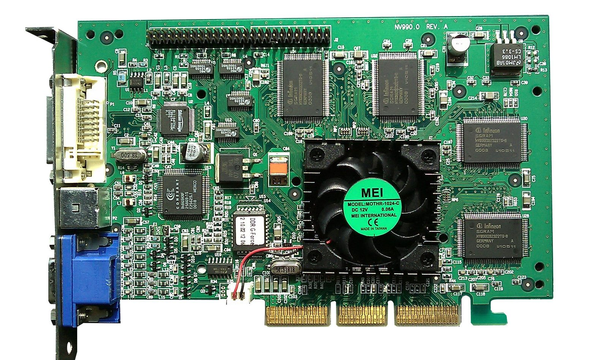

Unit 1 · Lesson 6
Seeing it: the interface and the GPU
Everything on your screen used to be typed. Today you point and tap, and a special chip draws millions of coloured squares many times a second.
The story
The first computers had no pictures on the screen. You typed a command, an exact order in the computer's own words, and the computer answered with text. You had to learn the commands first.
The mouse was invented in the 1960s; Douglas Engelbart showed it to the public in 1968. With the mouse came windows and icons: small pictures you point at and click, instead of typing commands.
In 1984 the Apple Macintosh brought the mouse and windows to the public, and in the following years they reached most personal computers. Now people could use a computer without learning any commands. This is a graphical interface: windows, icons and a pointer.


Windows and icons meant much more drawing work. In the mid-1990s, 3D graphics cards for games arrived. In 1999 NVIDIA sold its GeForce 256 as 'the world's first GPU' and made the name popular. GPU means graphics processing unit.


A GPU does the same small sum for many pixels at the same time. Today's GPUs have thousands of small calculators. Built for 3D games, now they also train AI.
Inside your computer today: every window, icon and touch screen; and a GPU in your phone, laptop or games console, and in the data centres where chatbots run.
The science
A screen is a grid of numbers
Zoom far enough into any picture and it becomes small squares: pixels. Each pixel is three numbers, for red, green and blue (RGB), each from 0 to 255: one byte each (lesson 3). (255, 0, 0) is red, (255, 255, 0) is yellow, (0, 0, 0) is black, (255, 255, 255) is white. A Full HD screen has 1,920 × 1,080 pixels: about 2 million, redrawn 60 times a second or more.
.jpg){kind=link}
A few fast cooks, or thousands of simple ones
The CPU is a few cooks, each very clever and fast. They are good at one long job, step by step, where each step needs the one before. The GPU is thousands of simple cooks. Each one is slower, but they all work at the same time, in parallel. They are good at the same small job done many times: colour this pixel, and this one, and this one.
- The cook = CPU core
- The metronome = clock (GHz)
- The countertop = cache
- The workbench = RAM
- The pantry = storage (SSD / HDD)


Why games and AI use GPUs
A game must work out millions of pixels many times a second: the same small sum, again and again. AI is the same kind of work: millions of small, similar sums. So the chips made for games now train and run chatbots (lesson 9). A GPU is not just a faster CPU: give it one long step-by-step job and it is slower.
- The cook = CPU core
- The metronome = clock (GHz)
- The countertop = cache
- The workbench = RAM
- The pantry = storage (SSD / HDD)
Check now
Quick questions. You see the answer at once.
A pixel has the numbers (255, 255, 0): full red, full green, no blue. What colour is it?
- yellow
- black
- blue
A GPU is just a faster CPU.
True or false?
When did the mouse and windows reach the public?
- in the 1940s
- in the 1980s
- in the 2010s
Try it
Colour the 10 × 10 picture with one cook, then with 100 cooks working at the same time. Compare the two times.
Paper version
A 10 × 10 picture (a yellow smiling face) has 100 squares. Round 1, one cook (like one CPU core): colours one square per tick, so 100 squares take 100 ticks. Round 2, 100 cooks (like a GPU): 1 tick to hand out the squares, 1 tick to colour all of them at once, 1 tick to put the picture together: 3 ticks. If a tick is about 1 second, as in class: about 100 seconds against about 3 seconds. The slow part of round 2 is handing out and collecting the squares. In a real computer, moving data to the GPU also takes time. CPU = a few fast cooks for long step-by-step jobs; GPU = thousands of simple cooks for the same small job, many times.
This is an old desktop PC with the side panel off. Drag each label to its number, or click a label and then a number. In a gaming PC, the graphics card plugs into the motherboard like the expansion card here.
Paper version
An old desktop PC, opened. Find and name: 1 power supply (top left, the grey box with vents) · 2 power cables (red, yellow and black wires) · 3 motherboard (the green board on the back wall) · 4 ribbon cables (grey and flat: they carry data to the drives) · 5 expansion card (a board plugged into the motherboard, at the bottom) · 6 drive bays (metal cages for storage drives, top right) · 7 the CPU, taken out of its socket and left on the bench (bottom right).
This is an old smartphone with the back taken off. Drag each label to its number, or click a label and then a number. Where is the GPU? Inside the same chip as the CPU, under the metal shield (chapter 7).
Paper version
An opened smartphone (an iPhone 4). Find and name: 1 camera (top left) · 2 logic board: the system on a chip (CPU and GPU together) is under the metal shield · 3 battery connector, under the small metal cover · 4 battery (the big black block) · 5 charging (dock) connector (bottom) · 6 the metal frame, which is also the antenna for the radios.
Your turn
Exercises
From ★☆☆ (easy) to ★★★ (hard). Use a hint if you are stuck.
-
Exercise 1 ★☆☆
Match each pixel's numbers (red, green, blue) to its colour.
- (255, 0, 0) — ?
- (0, 0, 255) — ?
- (255, 255, 255) — ?
- (0, 0, 0) — ?
-
Exercise 2 ★☆☆
Apple invented the mouse.
True or false?
-
Exercise 3 ★☆☆
The Be the GPU picture is 10 × 10 pixels. Each pixel is three numbers (red, green, blue). How many numbers is the whole picture?
-
Exercise 4 ★★☆
Put these events in time order, oldest first.
- 3D graphics cards for games (mid-1990s)
- Engelbart shows the mouse (1968)
- the GeForce 256 is sold as a 'GPU' (1999)
- the Macintosh (1984)
-
Exercise 5 ★★☆
In Be the GPU, one cook takes 100 ticks and 100 cooks take 3 ticks. About how many times faster are the 100 cooks? (Round to a whole number.)
-
Exercise 6 ★★☆
Which job is best for a GPU?
- making every pixel of a photo a little brighter
- one long calculation where every step needs the step before
- deciding which app to open next
-
Exercise 7 ★★★
A Full HD screen has 1,920 × 1,080 pixels. How many pixels is that, in millions? (One decimal place.)
-
Exercise 8 ★★★
Why are chatbots trained on GPUs and not only on CPUs? Use the kitchen.
In one sentence
A screen is millions of numbers; the GPU computes them all at once.
Words of the chapter
- command
- an exact order typed for the computer comando
- graphical interface
- windows, icons and a pointer instead of typed commands interfaccia grafica
- pixel
- one square of a picture or a screen pixel
- RGB
- red, green, blue: the three numbers of a pixel, each from 0 to 255 RGB (rosso, verde, blu)
- GPU
- graphics processing unit: thousands of simple cooks for pixels and AI GPU (processore grafico)
- parallel
- many jobs done at the same time in parallelo